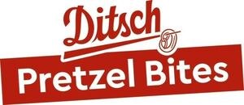

Trade Mark Journal No.2025/040 3 October 2025
WO0000001861493 (30,35)
Office of origin: European Union Intellectual Property Office (EUIPO)
Date of International Registration:13 December 2024
Date of designation in the UK:
13 December 2024

The mark contains the colour red.
International priority date claimed: 3 July 2024
(European Union Intellectual Property Office (EUIPO))
(019049578)
- Class 30
- Bakery goods; bread; rolls; pretzels; croissants; baguettes; bagels; pastries; pastry; sandwiches; pizzas; including all the aforesaid goods being prepared for baking; all the aforesaid goods also in frozen form; mixes for the preparation of bread; bun mix; doughs, batters, and mixes therefor; ready-made baking mixtures; flour; salted biscuits; wheat-based snack foods; filled bakery goods, especially filled baguettes, the aforesaid consisting mainly of preparations with the added following goods: fats, yeast, sugar, salt, mustard, preserved, dried, cooked and fresh fruits and vegetables, meat pies, meat derivatives, pork products and sausages, fish, game, sauces, spices, binding materials, oil seeds, nuts and nut products, sponge mixtures, sponge batters, eggs, egg products, milk, milk puddings, preparations containing cocoa, chocolate, coffee, fruit preparations, jams, honey, golden syrup, emulsifying agents, raising substances for baking, leaven, sour dough, malodextrin, waters, starch, starch products; cocoa-based beverages; chocolate-based beverages; coffee-based beverages; tea-based beverages.
- Class 35
- Wholesale services in relation to foodstuffs; retail services relating to food; wholesale services in relation to baked goods; retail services relating to bakery products; wholesale services in relation to non-alcoholic beverages; retail services in relation to non-alcoholic beverages; wholesale services in relation to alcoholic beverages (except beer); retail services in relation to alcoholic beverages (except beer).
PRISMA Backwaren GmbH
Brezelbäckerei Ditsch GmbH
Representative: PATENTANWÄLTE STURM WEILNAU FRANKE PARTNERSCHAFT MBB, Unter den Eichen 5, 65195 Wiesbaden, GERMANY